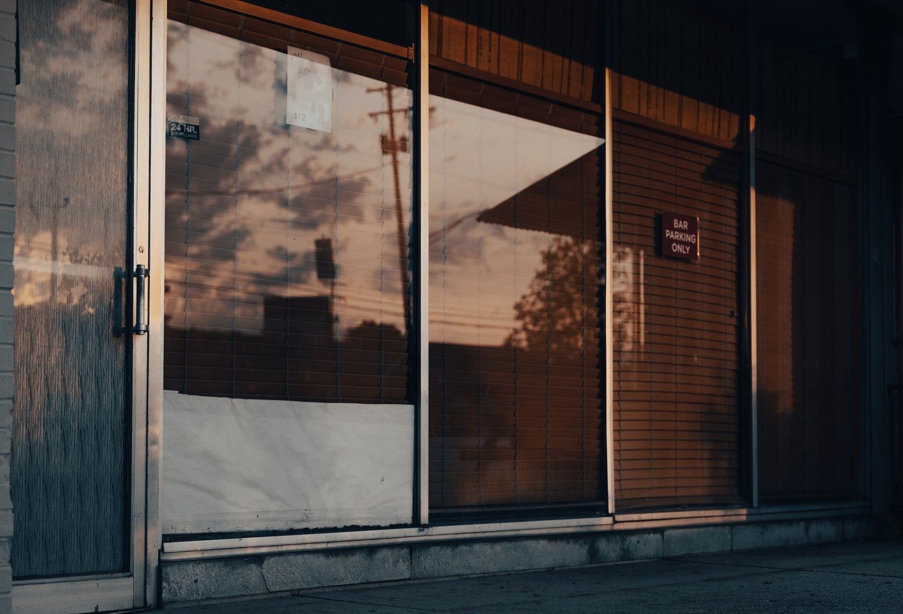
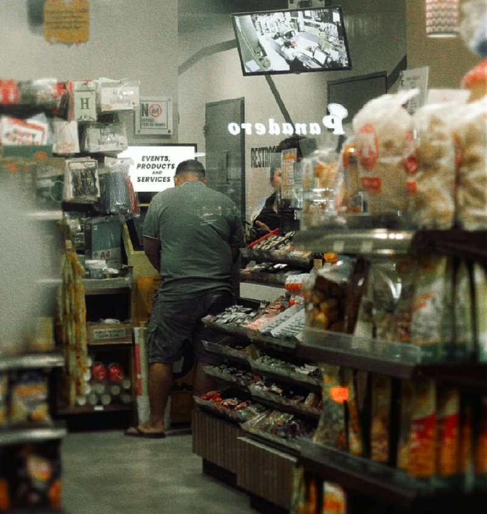
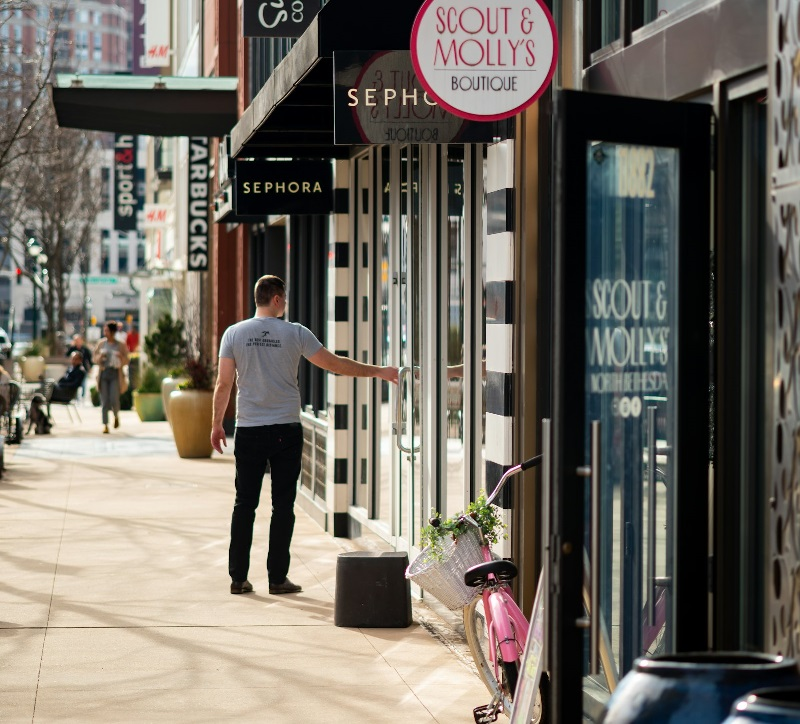

胖东来许昌生活广场店，要关了。
这家店开了24年，年销售额近20亿，年利润过1亿。8月9日，创始人于东来亲自发文，宣布2026年底永久关闭。
关店的原因，跟经营没半点关系。
于东来说了句话："个别租户租金涨到无法想象的地步，远远脱离公平。"
什么叫"无法想象"？事情要从2015年说起。那年签租约的时候，负责的人没按公司规定统一操作，部分铺面的租约是分开签的。胖东来生意越做越火，个别房东就开始年年加码——你赚得多，我就收得多。
于东来说，"其实这几户占比并不大。"可就是这几户，把一家年赚过亿的店，逼到了关门。

商户把一条街做旺，房东把租金一年年往上抬
很多人第一反应：房东涨租天经地义，市场行为嘛，谁赚钱谁多交。
周边商户也是这么想的。记者去走访，一家2005年就开业的旅馆老板说得很直白："因为他赚钱，房东才给涨房租。像我们周围不赚钱的，房东也没涨。"
听着挺有道理。
可这道理经不起细想。
胖东来2002年入驻许昌生活广场的时候，那片街区什么光景？周边的商户心里清楚：是胖东来一天天把这片地方养成了热闹商圈。24年，客流从无到有，从少到多，周边的旅馆、餐饮、小店铺，全靠胖东来的人气活着。
胖东来是这片商圈的根。根在，树活；根拔了，树死。
房东想的是：你赚了钱，我多收一点，合理。可他没算过一笔账——胖东来走了，这片商圈还值不值这个租金？
答案已经写在新乡了。
几年前，新乡胖东来也因为租金大幅上涨被迫撤场。原址商圈客流断崖式下跌，商铺大量空置，租金也跟着大幅回落。
房东涨租的时候，想的是"你赚得多，我多分一点"。胖东来走了以后才发现——客流是跟着胖东来走的，不是跟着房子走的。
房子还是那栋房子，人没了，钱没了，租金也撑不住了。
商户走了，铺子空了，整条街开始塌
这中间有个根本矛盾：房东卖的是空间，商户卖的是内容。空间不会自己产生客流，内容才会。
房东觉得，我提供了位置好的铺面，你才能做生意，所以你赚了钱我涨租合理。商户觉得，是我把这片地方做旺的，你坐享其成还年年加码，凭什么？
两种想法都有道理。但结果只有一个：双输。
胖东来走了，房东收不到那个"天价租金"了。周边商户没了客流，生意跟着塌。消费者少了一个好超市。整条街从热闹变冷清。
唯一"赢"的，是涨租那一瞬间的快感。可那快感，是用整条街的衰败换来的。
这种事，胖东来不是第一家经历，也不会是最后一家。

曾经排队的店，房东涨租后换了一个又一个招牌
你走到任何一个城市的商业街看看：十年前热闹的步行街，现在空了一半。曾经排队的网红店，房东涨租后换了三个招牌，一个比一个短命。社区门口的便利店，老板说"房租每年涨10%，利润每年降10%，再撑两年就不干了"。
房东和商户的关系，本该是共生。好的商业生态里，商户赚钱，房东收租，大家都有饭吃。可一旦房东只看眼前——你今年赚了100万，明年我就涨20万——这根藤就断了。
商户需要利润去养员工、进新货、做服务、扛风险。你把他的利润空间一年年压缩，他只有两条路：降品质，或者走人。
降品质，消费者用脚投票，客流下降，租金也撑不住。走人，商圈直接塌方。
两条路，最后都通向同一个结局：空铺。
胖东来这次关店引发全民关注，原因就在于它把一个所有人都隐约感觉到、却没人说透的道理，摆到了台面上——
于东来选择关店，很多人说他"硬气"。可他自己说得很清楚："不专业造成的失误是金钱无法衡量的。"他没在赌气，他在止损。一家店的情绪都被租金搞坏了，继续撑着，对谁都没好处。
可更大的止损，该谁来想？
房东们该想：涨租涨到商户跑了，空铺三年，你赚回来了吗？
商户们该想：你把一个商圈的根拔了，你的客流从哪来？
城市管理者更该想：一条商业街的衰败，从来不是从最后一家店关门开始的，而是从第一任房东涨租涨到商户扛不住的那一刻开始的。
评论区聊聊：你身边有没有房东涨租逼走好店的例子？
后来那条街怎么样了？